Each categories contains a memory and lessons as well as wisdom from each group I've been with. Pick one to see how I've met them and how I start my life experiences with them.
Family Pictures
Before the pandemic, my family would often go to events that relates to family or meeting with other relatives. We sometimes visit my grandparents each semester break which is located in a province
 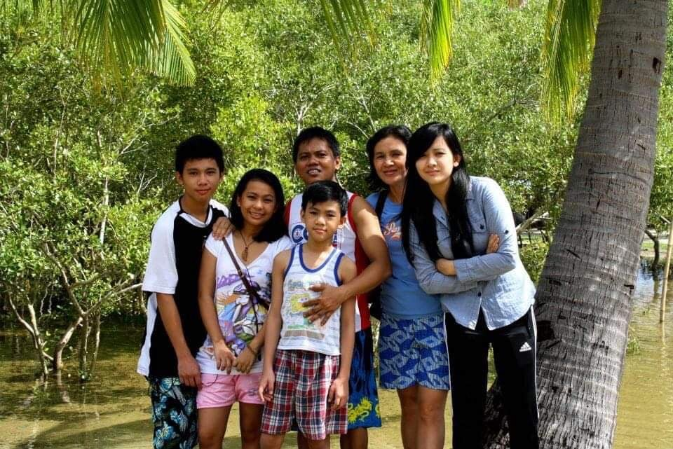
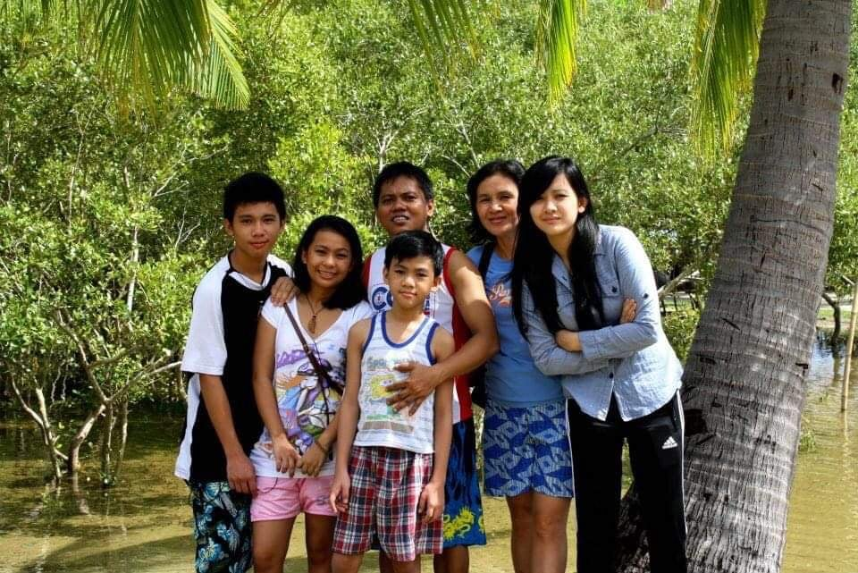
 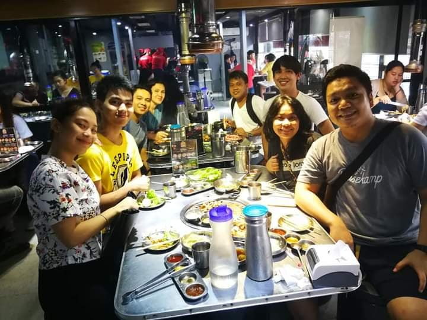
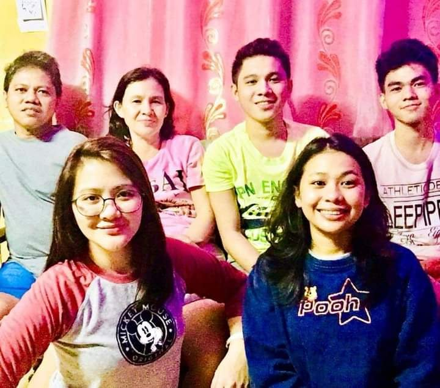
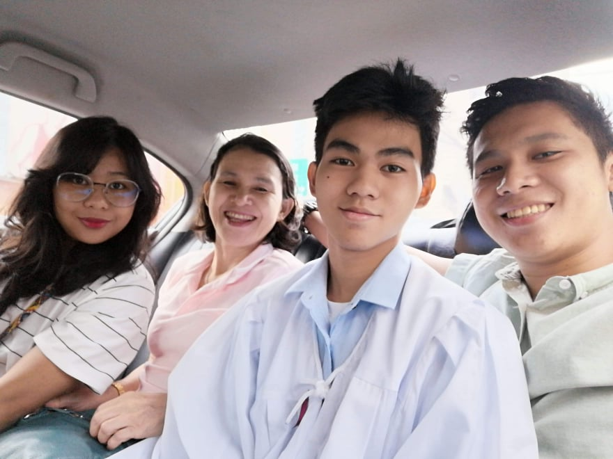
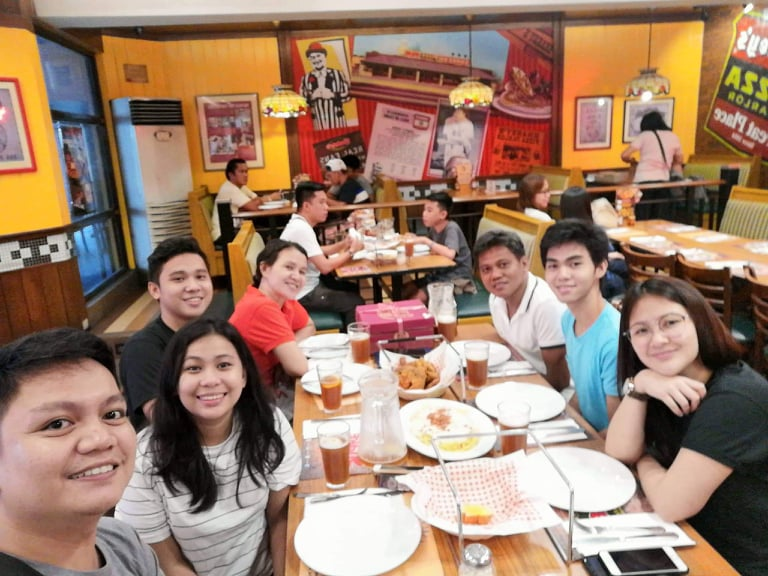
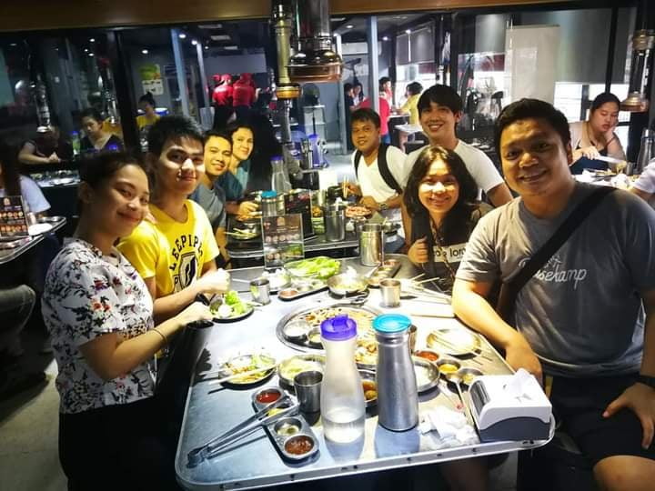
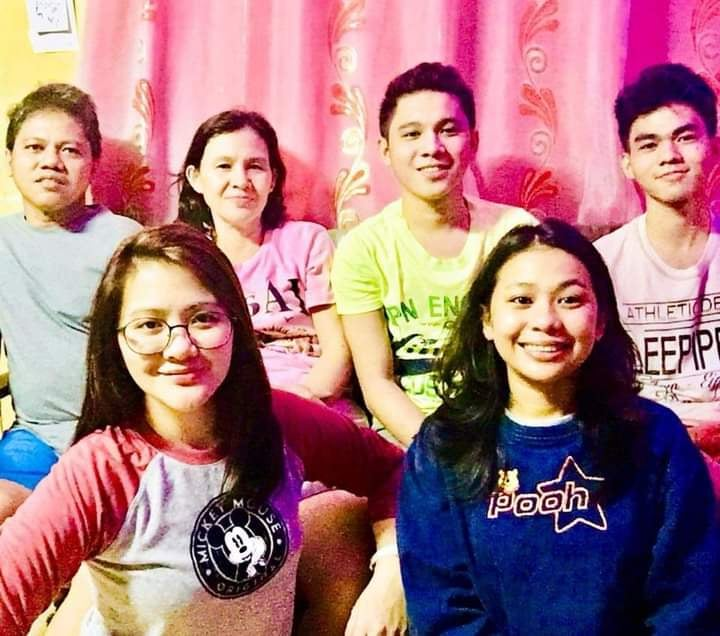
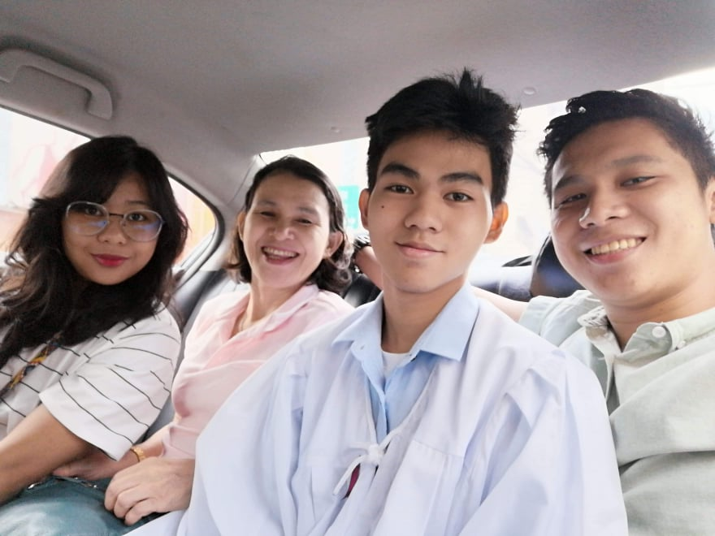
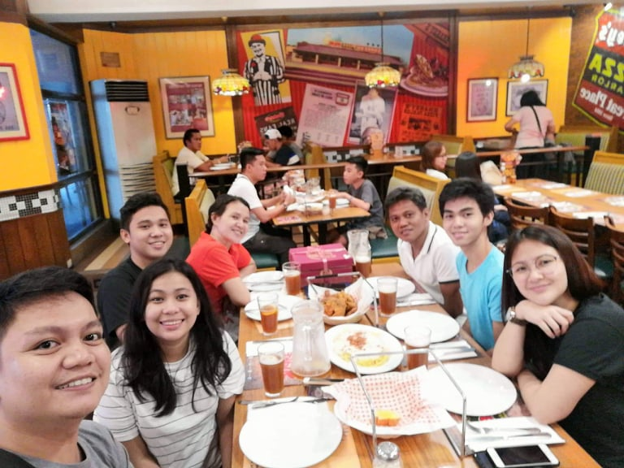
Circle of Friends
Aside from my family, I socialize and make new friends as I pass through from elementary to college. Interactions that relates to my activities or hobbies are often associated with my friends. We help and support each other in classrooms, assignments and even life advices. I don't depend on all of them but there company is always appreciated.
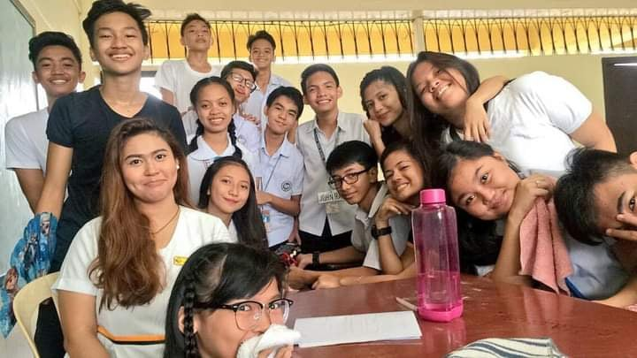 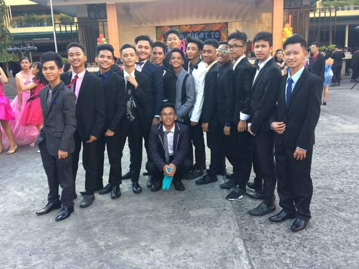 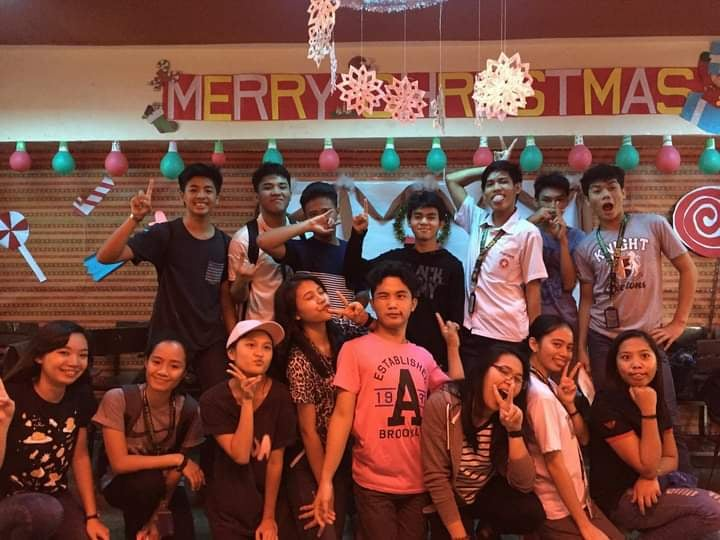 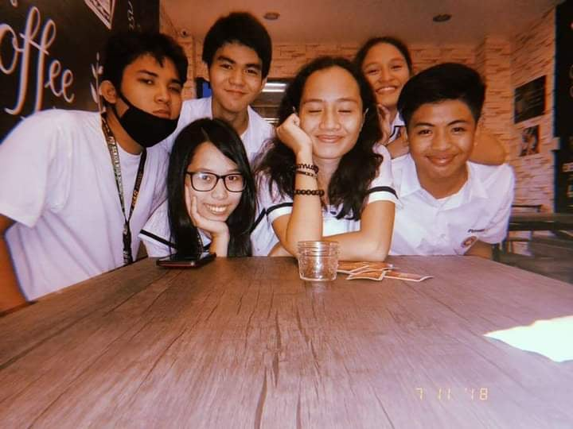 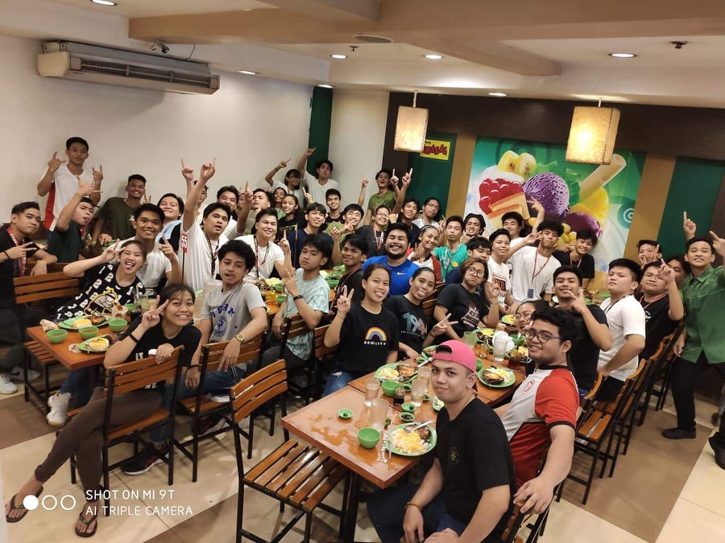 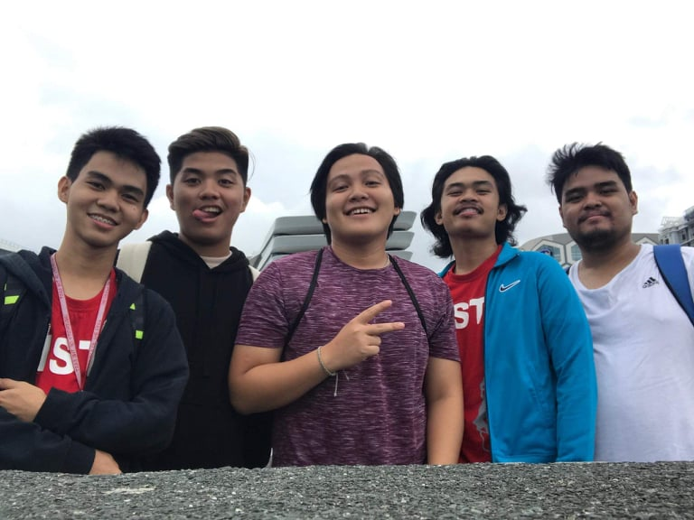
Profile Pictures / Stolen Shots
Taking a picture of myself is never my strong skill. I would delete them due to my negative thoughts about it and accept those thoughts as a fact but there are other people who would say otherwise. They would often take pictures of me unpermitted but I often do the same. The displayed picture below are a compilation of pictures of myself taken by my friends which are acceptable due to its quality and angle.
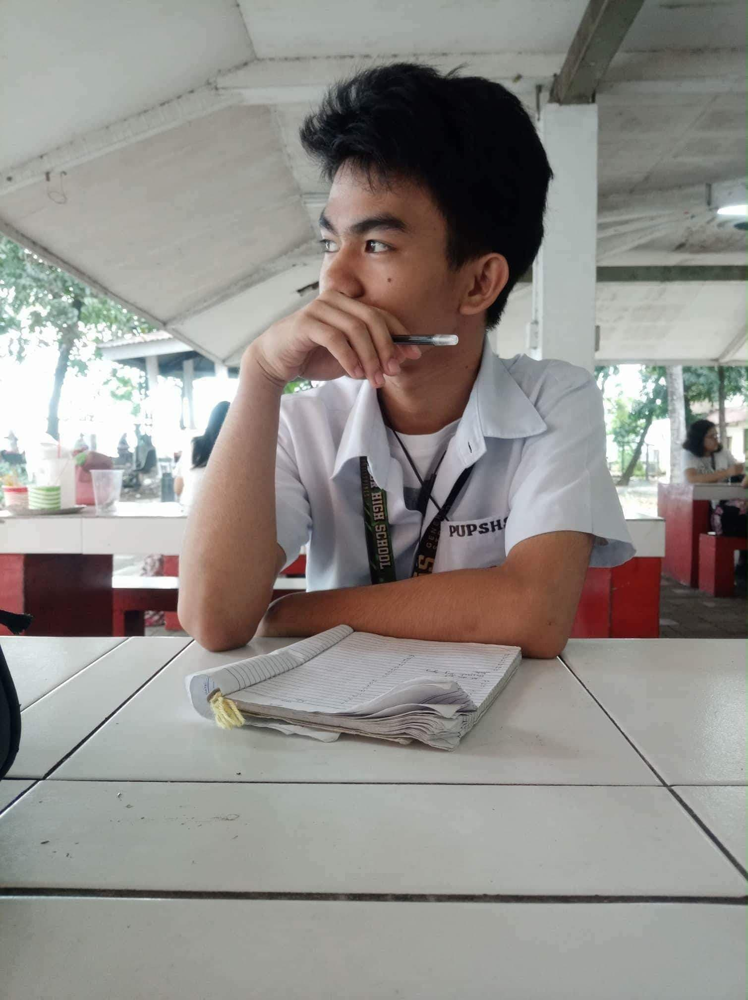 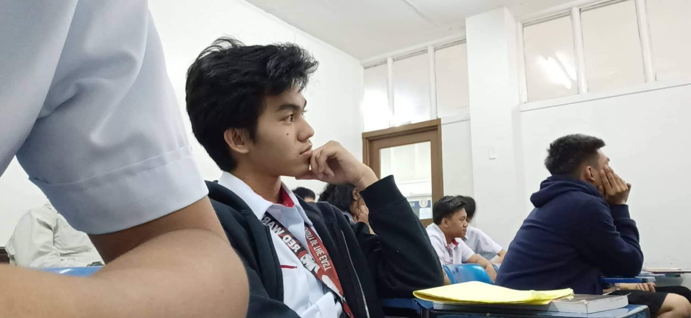 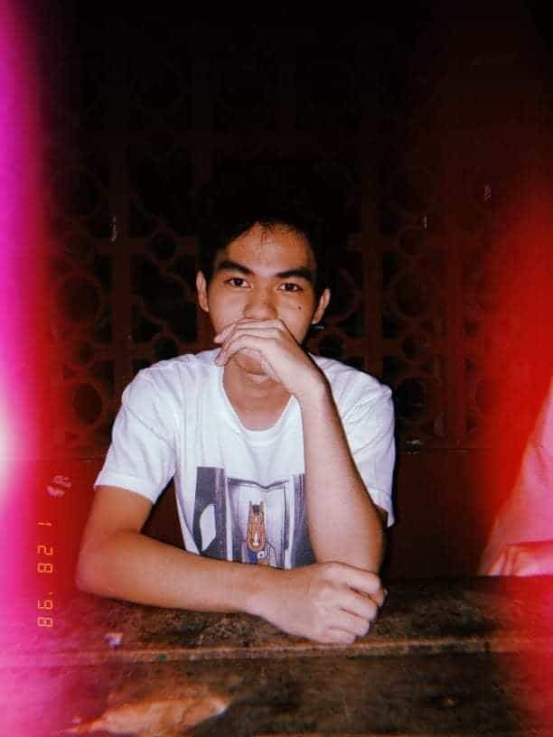 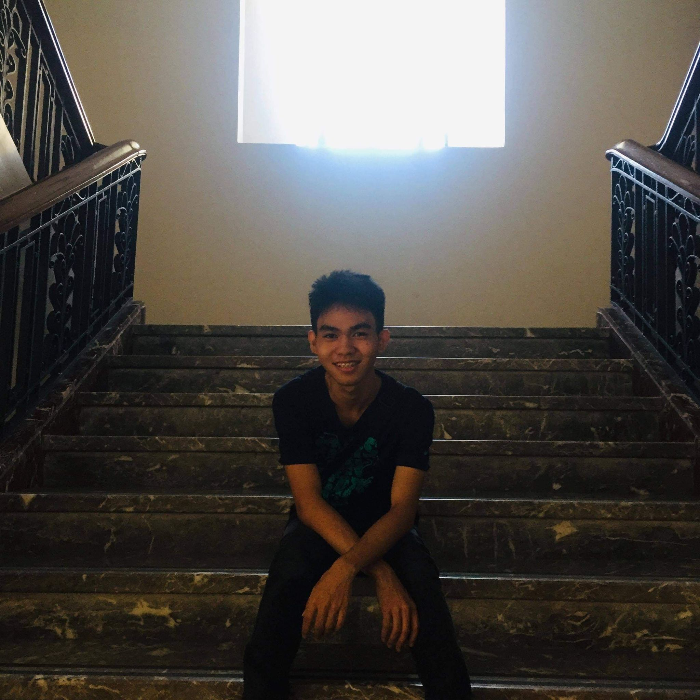